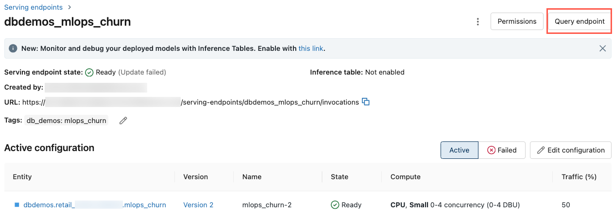

What is Databricks Feature & Function Serving?
Preview
This feature is in Public Preview.
Databricks Feature & Function Serving makes data in the Databricks platform available to models or applications deployed outside of Databricks. Feature & Function Serving endpoints automatically scale to adjust to real-time traffic and provide a high-availability, low-latency service for serving features. This page describes how to set up and use Feature & Function Serving.
When you use Databricks Model Serving to serve a model that was built using features from Databricks, the model automatically looks up and transforms features for inference requests. With Databricks Feature & Function Serving, you can serve structured data for retrieval augmented generation (RAG) applications, as well as features that are required for other applications, such as models served outside of Databricks or any other application that requires features based on data in Unity Catalog.
Why use Feature & Function Serving?
Databricks Feature & Function Serving provides a single interface that serves pre-materialized and on-demand features. It also includes the following benefits:
Simplicity. Databricks handles the infrastructure. With a single API call, Databricks creates a production-ready serving environment.
High availability and scalability. Feature & Function Serving endpoints automatically scale up and down to adjust to the volume of serving requests.
Security. Endpoints are deployed in a secure network boundary and use dedicated compute that terminates when the endpoint is deleted or scaled to zero.
Requirements
Databricks Runtime 14.2 ML or above.
Feature & Function Serving requires
databricks-feature-storeversion 0.16.2 or above. Databricks Runtime 14.2 ML includes version 0.16.1. To manually install the required version, use%pip install databricks-feature-store>=0.16.2. If you are using a Databricks notebook, you must then restart the Python kernel by running this command in a new cell:dbutils.library.restartPython().
Example notebooks
The following notebook illustrates how to create a Feature & Function Serving endpoint using Databricks Online Tables.
The following notebook illustrates how to create a Feature & Function Serving endpoint using a third-party online store.
Create a FeatureSpec
A FeatureSpec is a user-defined set of features and functions. You can combine features and functions in a FeatureSpec. FeatureSpecs are stored in and managed by Unity Catalog and appear in Catalog Explorer.
The tables specified in a FeatureSpec must be published to an online store or an online table. For information about how to publish features to an online store, see Publish features to an online store. For information about online tables, see Use online tables for real-time feature serving.
from databricks.feature_engineering import (
FeatureFunction,
FeatureLookup,
FeatureEngineeringClient,
)
fe = FeatureEngineeringClient()
features = [
# Lookup column `average_yearly_spend` and `country` from a table in UC by the input `user_id`.
FeatureLookup(
table_name="main.default.customer_profile",
lookup_key="user_id",
features=["average_yearly_spend", "country"]
),
# Calculate a new feature called `spending_gap` - the difference between `ytd_spend` and `average_yearly_spend`.
FeatureFunction(
udf_name="main.default.difference",
output_name="spending_gap",
# Bind the function parameter with input from other features or from request.
# The function calculates a - b.
input_bindings={"a": "ytd_spend", "b": "average_yearly_spend"},
),
]
# Create a `FeatureSpec` with the features defined above.
# The `FeatureSpec` can be accessed in Unity Catalog as a function.
fe.create_feature_spec(
name="main.default.customer_features",
features=features,
)
Create an endpoint
The FeatureSpec defines the endpoint. For more information, see Create and configure model serving endpoints and the API documentation for details.
from databricks.feature_engineering.entities.feature_serving_endpoint import (
ServedEntity,
EndpointCoreConfig,
)
fe.create_feature_serving_endpoint(
name="customer-features",
config=EndpointCoreConfig(
served_entities=ServedEntity(
feature_spec_name="main.default.customer_features",
workload_size="Small",
scale_to_zero_enabled=True,
instance_profile_arn=None,
)
)
)
To see the endpoint, click Serving in the left sidebar of the Databricks UI. When the state is Ready, the endpoint is ready to respond to queries. To learn more about Databricks Model Serving, see Databricks Model Serving.
Get an endpoint
Use the API get_feature_serving_endpoint to get the metadata and status of an endpoint.
endpoint = fe.get_feature_serving_endpoint(name="customer-features")
# print(endpoint)
Query an endpoint
The easiest way to try out the serving endpoint is through the Serving UI.
In the left nav bar of the Databricks workspace, click Serving.
Click the endpoint you want to query.
In the upper-right of the screen, click Query endpoint.
In the Request box, type the request body in JSON format.
Click Send request.
// Example of a request body.
{
"dataframe_records": [
{"user_id": 1, "ytd_spend": 598},
{"user_id": 2, "ytd_spend": 280}
]
}
The Query endpoint dialog includes generated example code in curl, Python, and SQL. Click the tabs to view and copy the example code.
To copy the code, click the copy icon in the upper-right of the text box.